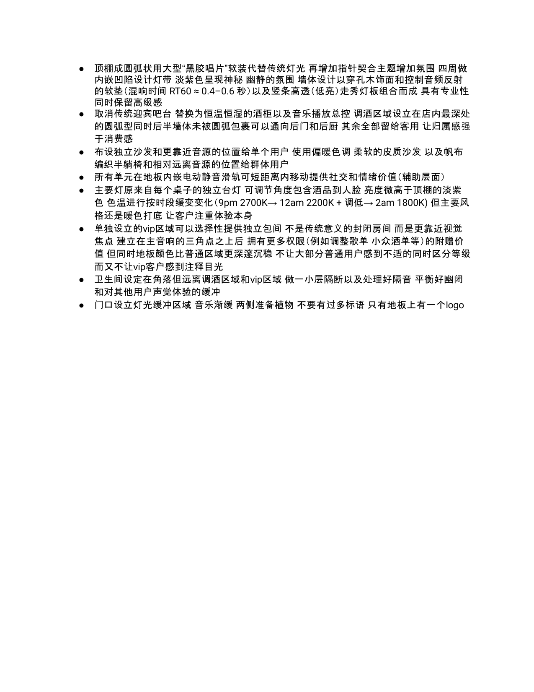
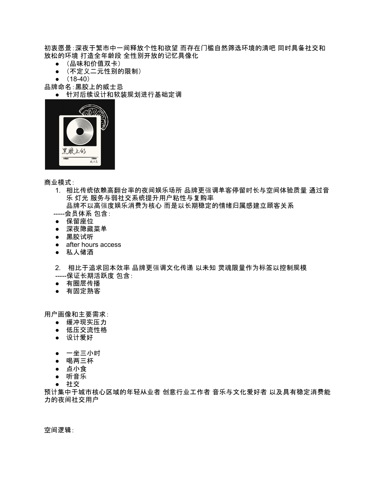
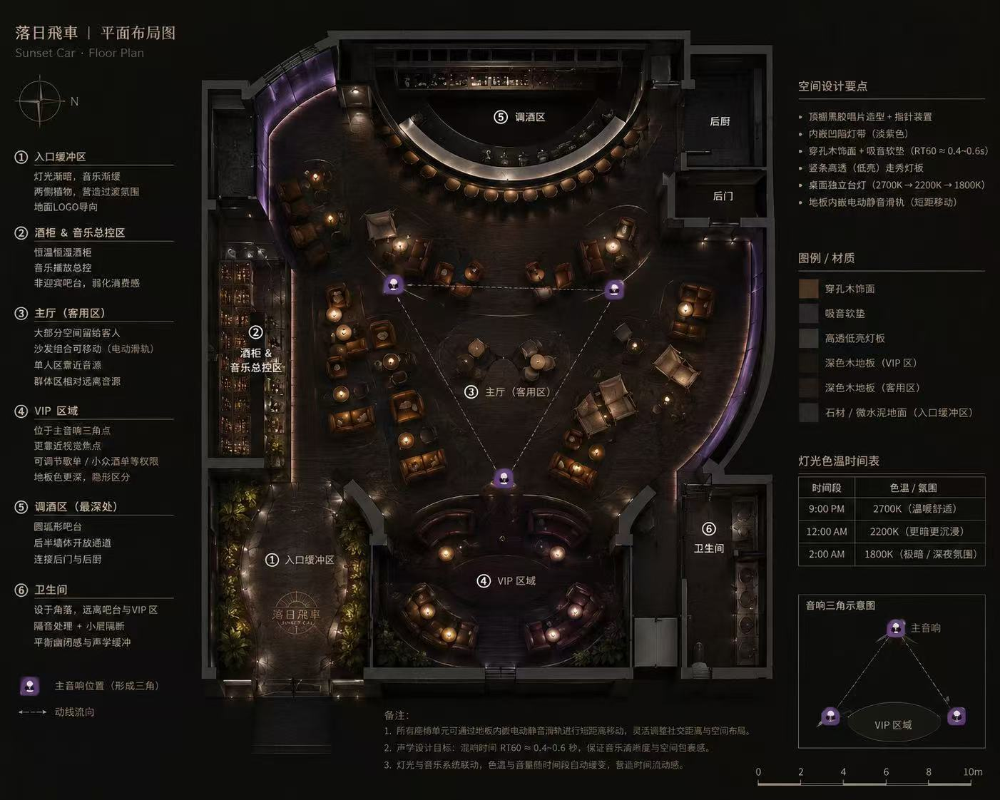

v1 → v2 · 第一次转向first pivot
从"我们卖什么"
到"为什么应该来"
From "what we sell"
to "why you'd come"
v1 是标准独立酒吧 landing page — 主视觉、菜单、地址、预约表单。做完看一眼关掉, 一周没再打开。问题不是它不好看, 是它在解释"我们卖什么", 完全没回答"为什么应该来"。
v1 was the standard indie-bar playbook — hero visual, menu, address, reservation form. I finished it, looked at it once, didn't reopen for a week. The problem wasn't that it looked bad — it explained what we sell without ever answering why you'd come.
The first draft sold drinks.
This one sells permission.
v1 → v2 · 商业计划书 2026.02
v2.2 · 一根针, 走了三版one hand, three drafts
把黑胶
变成一只钟
Turning vinyl
into a clock
22 分钟 — 一张 12 寸黑胶 A 面的长度。这个数字成了整间屋子的设计单位: 灯光渐暗的周期、推荐切下一张唱片的间隔、客人安静坐着不被打扰的最小窗口。
22 minutes — one side of a 12-inch vinyl. That number became the design unit of the whole room: dimming cycle, interval before recommending the next record, the minimum window of being-left-alone.
v2.1 给首屏的黑胶加上真实时间的指针。时针走了三版 — 调酒长匙(太硬) → 苦艾酒匙(有仪式感) → 分针换成水果鸡尾酒签 + 黑橄榄。一根针走三版, 才像个样子。
v2.1 gave the hero vinyl real clock hands. The hour hand took three drafts — bar spoon (too hard) → absinthe spoon (ritual) → minute became a cocktail pick + olive. One hand took three drafts before it felt like anything at all.
v2.1.1 → v2.2.1 · bar spoon → absinthe → pick

← 横向拖动 · 20 张 · 点击放大 →← drag horizontally · 20 scenes · click to expand →
v3 · 在没有房子之前before the room exists
先把光
画出来
Paint the light
first
v3 开始想做空间。没实体场地, 所以先在脑子里走一遍 — 入口缓冲、酒柜+音乐总控、主厅、VIP、调酒区、卫生间。所有的尺度、色温、声学吸音参数 (RT60 ≈ 0.4-0.6s) 都先在一张平面图上对齐。
v3 turned to space. With no physical site, I had to walk the room in my head first — entrance buffer, cellar + music control, main hall, VIP, bar, restrooms. All scale, color-temp, acoustic absorption (RT60 ≈ 0.4-0.6s) aligned on one floorplan before anything else.
然后用 FLUX.1-merged 生成 20 张实景渲染 — 9pm 2700K → 12am 2200K → 2am 1800K。代号: 落日飛車。
Then FLUX.1-merged generated 20 photoreal renders — 9pm 2700K → 12am 2200K → 2am 1800K. Codename: Sunset Car.
20 scenes · 6 zones · RT60 ≈ 0.4–0.6s
v3 · 三联菜单three menus
这间屋子的语言
写在三张纸上
The room's language
lives on three sheets
酒单 · 小食单 · 水烟单 — 三份独立的视觉草案, 每一份都做成可印刷的完整页面, 而不是 UI 截图。它们是纸的产物, 不是屏幕的产物。
Drinks · snacks · shisha — three separate visual drafts, each shipped as a complete printable page rather than a UI mockup. They are paper artefacts, not screen artefacts.
点击任一张, 查看完整成品。
Click any one to view the full final.
drinks / snacks / shisha · 4 pages each
v3.5 · 工程含量最高的一段the engineering moment
137 MB → 3.49 MB
137 MB → 3.49 MB
用 Microsoft TRELLIS 把所有 AI 实景图反过来 multidiffusion 融成一个完整的 GLB 场景。原始模型 137 MB, Safari 加载到一半就崩。用 gltf-transform 加 Draco 几何压缩 — 3.49 MB, 网页可以即时加载。
Microsoft TRELLIS fed all the AI scenes back in and multidiffusion-fused them into one complete GLB. Raw model: 137 MB — Safari crashed mid-load. After gltf-transform + Draco — 3.49 MB, instant in-browser load.
先后失败的工作链: Three.js 手搭 → Spline 导出 → Hunyuan3D 单件 → TRELLIS (跑通)。
Earlier chains that failed: Three.js handbuilt → Spline export → Hunyuan3D singles → TRELLIS (worked).
TRELLIS · multidiffusion · Draco · 拖动旋转drag to rotate
v4 · 选择不做choosing not to make more
3D 暂停 —
等真实的房子
3D paused —
waiting for the real room
v3.5 之后, 我把 3D 模块封存了。原因: 这间屋子终究是要建出来的, 一旦实体存在, 用 iPhone LiDAR 扫一次就能得到 100% 真实的模型。任何"想象的渲染"都会被替代。
After v3.5, I shelved the 3D module. The reason — this room will eventually be built, and once a physical space exists, one iPhone LiDAR scan gets you a 100% truthful model. Any "imagined render" gets overwritten.
继续在没有实体的阶段堆 AI 模型, 反而是在欺骗访客"你看到的就是它的样子"。事实是: 还没有人看到。
Stacking more AI without a real space is lying to visitors — "this is what it looks like." Truth: no one has seen it yet.
The discipline isn't making more.
It's knowing when to stop.
v3.5 → v4.0 · stop · wait for LiDAR
v4.1 · 写一本完整重建指南a full reconstruction guide
把整个项目
留给下一个人
Hand the whole thing
to the next person
v4.1 把这一切写成 《Whiskey on Vinyl · 完整重建指南》— 给未来任何一位接手者 (包括我自己) 可以从零重建整个网站的文档。代码、文案、决策、踩过的坑, 全部记下。
v4.1 wrote all of it into Whiskey on Vinyl · A Full Reconstruction Guide — a document any future caretaker (myself included) could use to rebuild the whole site from zero. Code, copy, decisions, mistakes, all logged.
让一个项目可以"被别人重建", 比让它"看起来很厉害"更难。这是 v4 里我最在意的产出。
Making a project rebuildable by someone else is harder than making it look impressive. It's the v4 output I care about most.
Markdown · 6000+ lines · hand-written